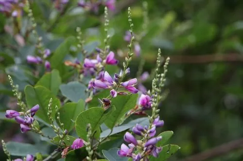

灌木与花木 · 植物界
胡枝子 Lespedeza bicolor

中国北方常见的落叶灌木，秋季开紫红色小花，枝叶可作饲料与绿肥，也是荒山绿化与水土保持的优良植物。
- 分类
- 门被子植物门纲木兰纲目豆目科豆科属胡枝子属
- 栖息环境
- 海拔 2000 米以下的山坡、林缘与灌丛，喜光耐寒耐旱
- 地理分布
- 中国东北、华北、华东、华中及西北地区，朝鲜半岛、日本、俄罗斯远东也有分布
- 保护级别
- 暂无评估；中国未列入国家重点保护野生植物名录
物种志
胡枝子为落叶灌木，高可达 3 m，分枝多、枝条细长；三出复叶，小叶卵形至椭圆形，先端圆钝。花期 7–9 月，总状花序腋生，花冠蝶形、紫红色至淡紫色，花萼密被柔毛；荚果卵形、扁平，成熟时褐色，内含 1 粒种子。
胡枝子分布于中国东北、华北、华东、华中及西北地区，也见于朝鲜半岛、日本、俄罗斯远东，喜光、耐寒、耐旱，适应性强，常生于山坡、林缘与灌丛。枝叶可作饲料与绿肥，根系可固氮；枝条可编织，花可入药，民间曾用其嫩叶代茶，故有“随军茶”之称。胡枝子萌蘖力强、覆盖度大，是荒山绿化、水土保持与护坡的优良灌木，花期长，也是良好的蜜源植物。
形态与习性
- 株高可达 3 m，分枝多
- 花期7–9 月，花紫红色
- 果期9–10 月，荚果扁平
- 光照喜光，也稍耐阴
- 水分耐旱，怕积水
- 土壤适应性强，耐瘠薄
- 主要用途饲料与绿肥、荒山绿化与水土保持、枝条编织、蜜源
趣味知识
- 胡枝子秋季开紫红色小花，花期长，是北方山区常见的观花灌木。
- 胡枝子的嫩叶曾代茶饮用，因此民间又称它“随军茶”。
- 胡枝子根系能固氮，萌蘖力强，是荒山绿化与水土保持的优良灌木。
- 胡枝子的枝叶可作饲料与绿肥，是山区重要的乡土资源植物。